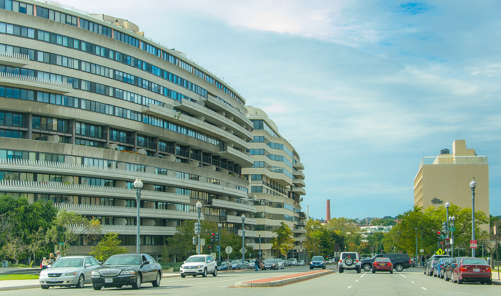
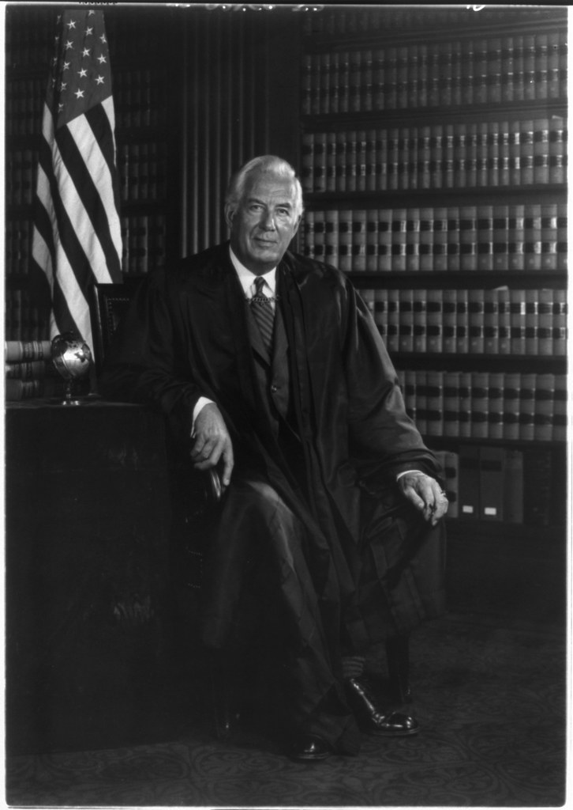

United States v. Nixon is the 1974 US Supreme Court case which compelled then President Richard Nixon to produce unedited recorded conversations in order to fulfill the requirements of a subpoena for evidence in the criminal investigation against the five men accused of the break-in of the Democractic National Convention's offices at the Watergate Hotel in Washington D.C. in 1972 precipitating the Watergate Scandal which lead to Nixon's eventual resignation.

While the subpoena asked for unedited transcripts of 48 pertinent conversations, Nixon only produced edited versions of 20 conversations, thus setting the stage for the case to be taken to the Supreme Court over whether or not Nixon would have to produce everything asked for in the subpoena. Nixon claimed that he had the right to exercise judgment in which conversations were released and to what extent the conversation were redacted because of the doctrine of executive privilege. This argument was unanimously rejected by the Supreme Court. In ruling as such, the Supreme Court established that a President cannot excuse themselves from producing evidence for a criminal investigation through the doctrine of executive privilege.
Concerning the matter of executive privilege, Chief Justice Warren Burger wrote in the majority opinion that
"[n]either the doctrine of separation of powers nor the generalized need for confidentiality of high-level communications ... can sustain an absolute, unqualified Presidential privilege of immunity from judicial process under all circumstances ... Absent a claim of need to protect military, diplomatic, or sensitive national security secrets, the confidentiality of Presidential communications is not significantly diminished by producing material for a criminal trial under the protected conditions of in camera inspection, and any absolute executive privilege under Art. II of the Constitution would plainly conflict with the function of the courts under the Consitution."
Thus, the Supreme Court agreed that the executive privilege to keep communications within the Executive Branch private does exist within the realm of protecting national security; they disagreed, however, that Nixon's conversations met this threshold, and they also disagreed that having to disclose information in a criminal investigation from time to time would discourage advisors from making sincere counsel in the future. The "Watergate Tapes", as they have come to be called, were ordered to be released on July 24, 1974.
As it turns out, by trying to keep the tapes secret Richard Nixon was trying to cover up the fact that his administration did indeed have deep ties to those that perpetrated the Watergate break-in. Unedited transcripts of the Watergate Tapes were released soon after the July 24th verdict, and on August 5th Nixon released a transcript of a tape in which he ordered the cover-up of the Watergate burglary and demanded that the FBI abandoned their investigations into the matter. Three days after this so-called "Smoking Gun Tape" was released, Nixon resigned on August 8, 1974. You can listen to The Smoking Gun Tape here.